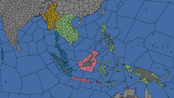

- 关于这个地区的国家列表，请看 东印度大区。
东印度次大陆（East Indian regions，东印度各区域）是这些区域，其是东印度次大陆的一部分而且属于亚洲。下表内容超出了 /Europa Universalis IV/history/provinces 文件的范围外，是游戏中1444年11月11日的数据。所列的省份名称是玩家关闭“动态省份名称（Dynamic Province Names”选项的；在游戏内找到的名称可能是不同的。
注： 欧陆风云4中的大陆、次大陆、区域和地区并不完全与现实中相符。
| 目录 | |||
|---|---|---|---|
| 地图 | 区域 | 地区 | |
|  | 缅甸 | 中缅甸 • 钦敦 • 克钦 • 克伦尼 • 下缅甸 • 若开 • 掸山 • 上缅甸 | |
| 印度支那 | 柬埔寨 • 中泰 • 占婆 • 呵叻 • 湄公河 • 素可泰 • • 琅勃拉邦 • 万象 • 北泰 • 红河 • 占巴塞 •西原 • 东京 | ||
| 印度尼西亚 | 文莱 •加里曼丹 • 库泰 • 沙巴 • 班贾尔 • 中爪哇 • 东爪哇 • 万丹 •苏腊巴亚 • 小巽他群岛 • 西爪哇 | ||
| 马来亚 | 中丹那沙林 • 北丹那沙林 • 印度洋诸岛 • 柔佛 • 北马来亚 • 马六甲 • 马来亚 • 米南加保 • 廖内 楠榜 • 亚齐 • 巴塔克 • | ||
| 摩鹿加 | 望加锡 • 东棉兰老岛 • 摩鹿加 • 吕宋北部 • 北苏拉威西 • 巴拉望 • 吕宋南部 • 南苏拉威西 • 香料群岛 • 帝汶 • 米沙鄢群岛 • 西棉兰老岛 | ||
缅甸
中缅甸
| ID | 名称 | 所有者（1444） | 宗教 | 文化 | 产品 | 贸易节点 | 永久性修正 | |||
|---|---|---|---|---|---|---|---|---|---|---|
| 585 | 5 | 5 | 4 | 缅甸 | ||||||
| 4394 | 3 | 2 | 3 | 缅甸 | ||||||
| 4395 | 2 | 3 | 2 | 缅甸 | ||||||
| 4396 | 4 | 4 | 3 | 缅甸 |
钦敦
| ID | 名称 | 所有者（1444） | 宗教 | 文化 | 产品 | 贸易节点 | 永久性修正 | |||
|---|---|---|---|---|---|---|---|---|---|---|
| 580 | 3 | 3 | 1 | 缅甸 | ||||||
| 2397 | 1 | 2 | 1 | 缅甸 | ||||||
| 2398 | 2 | 2 | 1 | 缅甸 | ||||||
| 4393 | 2 | 2 | 2 | 缅甸 |
克钦
| ID | 名称 | 所有者（1444） | 宗教 | 文化 | 产品 | 贸易节点 | 永久性修正 | |||
|---|---|---|---|---|---|---|---|---|---|---|
| 582 | 3 | 3 | 3 | 缅甸 | ||||||
| 2395 | 2 | 2 | 1 | 缅甸 | ||||||
| 2396 | 2 | 3 | 2 | 缅甸 | ||||||
| 4404 | 1 | 1 | 1 | 缅甸 | ||||||
| 4405 | 2 | 2 | 2 | 缅甸 |
克伦尼
| ID | 名称 | 所有者（1444） | 宗教 | 文化 | 产品 | 贸易节点 | 永久性修正 | |||
|---|---|---|---|---|---|---|---|---|---|---|
| 589 | 5 | 5 | 3 | 缅甸 | ||||||
| 2401 | 2 | 2 | 2 | 缅甸 | ||||||
| 4398 | 2 | 2 | 1 | 缅甸 |
下缅甸
| ID | 名称 | 所有者（1444） | 宗教 | 文化 | 产品 | 贸易节点 | 永久性修正 | |||
|---|---|---|---|---|---|---|---|---|---|---|
| 586 | 5 | 4 | 3 | 缅甸 | ||||||
| 2403 | 3 | 3 | 2 | 缅甸 | ||||||
| 1815 | 3 | 3 | 2 | 缅甸 | 伊洛瓦底江口 | |||||
| 590 | 3 | 3 | 2 | 缅甸 | ||||||
| 4399 | 5 | 3 | 3 | 缅甸 | 伊洛瓦底江口 |
若开
| ID | 名称 | 所有者（1444） | 宗教 | 文化 | 产品 | 贸易节点 | 永久性修正 | |||
|---|---|---|---|---|---|---|---|---|---|---|
| 568 | 5 | 5 | 3 | 孟加拉 | 沿海贸易中心 | |||||
| 579 | 4 | 4 | 2 | 孟加拉 | ||||||
| 2402 | 4 | 4 | 2 | 孟加拉 |
掸山
| ID | 名称 | 所有者（1444） | 宗教 | 文化 | 产品 | 贸易节点 | 永久性修正 | |||
|---|---|---|---|---|---|---|---|---|---|---|
| 583 | 3 | 3 | 3 | 缅甸 | ||||||
| 588 | 2 | 2 | 2 | 缅甸 | ||||||
| 2400 | 3 | 3 | 2 | 缅甸 | ||||||
| 4406 | 2 | 2 | 1 | 缅甸 |
上缅甸
| ID | 名称 | 所有者（1444） | 宗教 | 文化 | 产品 | 贸易节点 | 永久性修正 | |||
|---|---|---|---|---|---|---|---|---|---|---|
| 581 | 5 | 5 | 4 | 缅甸 | ||||||
| 584 | 6 | 6 | 4 | 缅甸 | ||||||
| 2399 | 4 | 4 | 3 | 缅甸 |
印度支那
柬埔寨
| ID | 名称 | 所有者（1444） | 宗教 | 文化 | 产品 | 贸易节点 | 永久性修正 | |||
|---|---|---|---|---|---|---|---|---|---|---|
| 604 | 4 | 4 | 2 | 暹罗 | ||||||
| 4825 | 3 | 3 | 2 | 暹罗 | ||||||
| 4826 | 4 | 4 | 2 | 暹罗 | ||||||
| 2379 | 2 | 2 | 2 | 暹罗 |
吴哥
| ID | 名称 | 所有者（1444） | 宗教 | 文化 | 产品 | 贸易节点 | 永久性修正 | |||
|---|---|---|---|---|---|---|---|---|---|---|
| 609 | 5 | 5 | 3 | 暹罗 | ||||||
| 1823 | 4 | 4 | 2 | 暹罗 | ||||||
| 2378 | 2 | 2 | 1 | 暹罗 | ||||||
| 4827 | 2 | 2 | 2 | 暹罗 | ||||||
| 4828 | 2 | 2 | 2 | 暹罗 |
中泰
| ID | 名称 | 所有者（1444） | 宗教 | 文化 | 产品 | 贸易节点 | 永久性修正 | |||
|---|---|---|---|---|---|---|---|---|---|---|
| 600 | 8 | 8 | 4 | 暹罗 | 沿海贸易中心 | |||||
| 603 | 4 | 4 | 3 | 暹罗 | ||||||
| 4831 | 3 | 3 | 3 | 暹罗 | ||||||
| 4832 | 3 | 3 | 3 | 暹罗 | ||||||
| 4830 | 3 | 3 | 3 | 暹罗 |
占婆
| ID | 名称 | 所有者（1444） | 宗教 | 文化 | 产品 | 贸易节点 | 永久性修正 | |||
|---|---|---|---|---|---|---|---|---|---|---|
| 606 | 4 | 4 | 2 | 暹罗 | ||||||
| 607 | 5 | 5 | 2 | 暹罗 | ||||||
| 1022 | 4 | 4 | 2 | 暹罗 | ||||||
| 2374 | 2 | 2 | 2 | 暹罗 | ||||||
| 4822 | 4 | 3 | 2 | 暹罗 |
西原
| ID | 名称 | 所有者（1444） | 宗教 | 文化 | 产品 | 贸易节点 | 永久性修正 | |||
|---|---|---|---|---|---|---|---|---|---|---|
| 2375 | 2 | 2 | 2 | 暹罗 | ||||||
| 4823 | 2 | 2 | 2 | 暹罗 | ||||||
| 4824 | 2 | 2 | 2 | 暹罗 |
呵叻
| ID | 名称 | 所有者（1444） | 宗教 | 文化 | 产品 | 贸易节点 | 永久性修正 | |||
|---|---|---|---|---|---|---|---|---|---|---|
| 612 | 2 | 2 | 1 | 暹罗 | ||||||
| 2383 | 2 | 2 | 2 | 暹罗 | ||||||
| 2386 | 2 | 2 | 1 | 暹罗 | ||||||
| 4836 | 3 | 3 | 3 | 暹罗 |
湄公河
| ID | 名称 | 所有者（1444） | 宗教 | 文化 | 产品 | 贸易节点 | 永久性修正 | |||
|---|---|---|---|---|---|---|---|---|---|---|
| 605 | 5 | 5 | 3 | 暹罗 | ||||||
| 2376 | 3 | 3 | 3 | 暹罗 | 湄公河河口 | |||||
| 2377 | 4 | 4 | 2 | 暹罗 | ||||||
| 2380 | 6 | 6 | 3 | 暹罗 | ||||||
| 4829 | 2 | 2 | 2 | 暹罗 |
琅勃拉邦
| ID | 名称 | 所有者（1444） | 宗教 | 文化 | 产品 | 贸易节点 | 永久性修正 | |||
|---|---|---|---|---|---|---|---|---|---|---|
| 615 | 4 | 4 | 3 | 暹罗 | ||||||
| 1844 | 2 | 2 | 2 | 暹罗 | ||||||
| 2371 | 2 | 2 | 2 | 暹罗 | ||||||
| 2381 | 2 | 2 | 2 | 暹罗 |
万象
| ID | 名称 | 所有者（1444） | 宗教 | 文化 | 产品 | 贸易节点 | 永久性修正 | |||
|---|---|---|---|---|---|---|---|---|---|---|
| 611 | 2 | 2 | 2 | 暹罗 | ||||||
| 614 | 5 | 5 | 4 | 暹罗 | ||||||
| 2384 | 2 | 2 | 1 | 暹罗 | ||||||
| 2385 | 2 | 2 | 2 | 暹罗 |
素可泰
| ID | 名称 | 所有者（1444） | 宗教 | 文化 | 产品 | 贸易节点 | 永久性修正 | |||
|---|---|---|---|---|---|---|---|---|---|---|
| 601 | 6 | 6 | 3 | 暹罗 | ||||||
| 2388 | 4 | 4 | 3 | 暹罗 | ||||||
| 2389 | 5 | 5 | 3 | 暹罗 | ||||||
| 4833 | 3 | 3 | 3 | 暹罗 | ||||||
| 4834 | 3 | 3 | 3 | 暹罗 |
清迈
| ID | 名称 | 所有者（1444） | 宗教 | 文化 | 产品 | 贸易节点 | 永久性修正 | |||
|---|---|---|---|---|---|---|---|---|---|---|
| 589 | 7 | 5 | 5 | 暹罗 | ||||||
| 602 | 5 | 4 | 3 | 暹罗 | ||||||
| 1817 | 3 | 3 | 2 | 暹罗 | ||||||
| 4841 | 4 | 3 | 3 | 暹罗 | ||||||
| 4842 | 3 | 3 | 2 | 暹罗 |
占巴塞
| ID | 名称 | 所有者（1444） | 宗教 | 文化 | 产品 | 贸易节点 | 永久性修正 | |||
|---|---|---|---|---|---|---|---|---|---|---|
| 608 | 2 | 2 | 1 | 暹罗 | ||||||
| 2382 | 3 | 3 | 2 | 暹罗 | ||||||
| 4838 | 2 | 2 | 1 | 暹罗 | ||||||
| 4839 | 4 | 3 | 3 | 暹罗 | ||||||
| 4840 | 2 | 2 | 1 | 暹罗 |
红河
| ID | 名称 | 所有者（1444） | 宗教 | 文化 | 产品 | 贸易节点 | 永久性修正 | |||
|---|---|---|---|---|---|---|---|---|---|---|
| 613 | 9 | 7 | 4 | 广州 | ||||||
| 616 | 2 | 2 | 3 | 广州 | ||||||
| 2372 | 5 | 5 | 3 | 广州 | 红河河口 | |||||
| 4819 | 4 | 3 | 3 | 广州 | ||||||
| 4820 | 4 | 3 | 2 | 广州 |
东京
| ID | 名称 | 所有者（1444） | 宗教 | 文化 | 产品 | 贸易节点 | 永久性修正 | |||
|---|---|---|---|---|---|---|---|---|---|---|
| 610 | 7 | 4 | 4 | 广州 | ||||||
| 1016 | 5 | 3 | 3 | 广州 | ||||||
| 2373 | 5 | 5 | 3 | 暹罗 | ||||||
| 4821 | 4 | 3 | 3 | 暹罗 |
印度尼西亚
文莱
| ID | 名称 | 所有者（1444） | 宗教 | 文化 | 产品 | 贸易节点 | 永久性修正 | |||
|---|---|---|---|---|---|---|---|---|---|---|
| 636 | 5 | 5 | 3 | 马六甲 | 沿海贸易中心 | |||||
| 2704 | 4 | 3 | 3 | 马六甲 | ||||||
| 2705 | 3 | 3 | 2 | 马六甲 | ||||||
| 4805 | 3 | 3 | 2 | 马六甲 | ||||||
| 4806 | 1 | 1 | 1 | 马六甲 |
沙巴
| ID | 名称 | 所有者（1444） | 宗教 | 文化 | 产品 | 贸易节点 | 永久性修正 | |||
|---|---|---|---|---|---|---|---|---|---|---|
| 637 | 3 | 3 | 3 | 马六甲 | ||||||
| 2703 | 3 | 3 | 2 | 马六甲 | ||||||
| 2709 | 2 | 2 | 2 | 马六甲 |
中爪哇
| ID | 名称 | 所有者（1444） | 宗教 | 文化 | 产品 | 贸易节点 | 永久性修正 | |||
|---|---|---|---|---|---|---|---|---|---|---|
| 626 | 5 | 5 | 3 | 摩鹿加群岛 | ||||||
| 2689 | 2 | 2 | 2 | 摩鹿加群岛 | ||||||
| 2690 | 2 | 2 | 2 | 摩鹿加群岛 | ||||||
| 4792 | 2 | 2 | 2 | 摩鹿加群岛 |
东爪哇
| ID | 名称 | 所有者（1444） | 宗教 | 文化 | 产品 | 贸易节点 | 永久性修正 | |||
|---|---|---|---|---|---|---|---|---|---|---|
| 627 | 5 | 5 | 3 | 摩鹿加群岛 | ||||||
| 2691 | 2 | 2 | 2 | 摩鹿加群岛 | ||||||
| 4794 | 2 | 2 | 2 | 摩鹿加群岛 |
苏腊巴亚
| ID | 名称 | 所有者（1444） | 宗教 | 文化 | 产品 | 贸易节点 | 永久性修正 | |||
|---|---|---|---|---|---|---|---|---|---|---|
| 628 | 5 | 5 | 3 | 摩鹿加群岛 | ||||||
| 629 | 5 | 5 | 3 | 摩鹿加群岛 | ||||||
| 2692 | 1 | 1 | 1 | 摩鹿加群岛 | ||||||
| 4793 | 2 | 2 | 2 | 摩鹿加群岛 |
西爪哇
| ID | 名称 | 所有者（1444） | 宗教 | 文化 | 产品 | 贸易节点 | 永久性修正 | |||
|---|---|---|---|---|---|---|---|---|---|---|
| 625 | 3 | 3 | 2 | 摩鹿加群岛 | ||||||
| 2688 | 4 | 4 | 3 | 摩鹿加群岛 | ||||||
| 4791 | 4 | 4 | 3 | 摩鹿加群岛 |
万丹
| ID | 名称 | 所有者（1444） | 宗教 | 文化 | 产品 | 贸易节点 | 永久性修正 | |||
|---|---|---|---|---|---|---|---|---|---|---|
| 624 | 4 | 4 | 3 | 摩鹿加群岛 | 天然良港 | |||||
| 630 | 4 | 4 | 2 | 摩鹿加群岛 | 中转港 | |||||
| 2687 | 3 | 3 | 2 | 摩鹿加群岛 | ||||||
| 4790 | 3 | 3 | 2 | 摩鹿加群岛 |
加里曼丹
| ID | 名称 | 所有者（1444） | 宗教 | 文化 | 产品 | 贸易节点 | 永久性修正 | |||
|---|---|---|---|---|---|---|---|---|---|---|
| 640 | 5 | 5 | 3 | 马六甲 | ||||||
| 2706 | 2 | 2 | 2 | 马六甲 | ||||||
| 4802 | 5 | 5 | 3 | 马六甲 | ||||||
| 4803 | 3 | 3 | 3 | 马六甲 | ||||||
| 4804 | 3 | 3 | 2 | 马六甲 |
班贾尔
| ID | 名称 | 所有者（1444） | 宗教 | 文化 | 产品 | 贸易节点 | 永久性修正 | |||
|---|---|---|---|---|---|---|---|---|---|---|
| 639 | 4 | 4 | 3 | 马六甲 | ||||||
| 2707 | 3 | 3 | 3 | 马六甲 | ||||||
| 2708 | 2 | 2 | 1 | 马六甲 | ||||||
| 4800 | 3 | 3 | 2 | 马六甲 | ||||||
| 4801 | 2 | 3 | 1 | 马六甲 |
库泰
| ID | 名称 | 所有者（1444） | 宗教 | 文化 | 产品 | 贸易节点 | 永久性修正 | |||
|---|---|---|---|---|---|---|---|---|---|---|
| 638 | 5 | 5 | 3 | 马六甲 | ||||||
| 2710 | 2 | 2 | 2 | 马六甲 | ||||||
| 2711 | 2 | 2 | 3 | 马六甲 | ||||||
| 2712 | 3 | 3 | 2 | 马六甲 | ||||||
| 4799 | 3 | 3 | 2 | 马六甲 |
小巽他群岛
| ID | 名称 | 所有者（1444） | 宗教 | 文化 | 产品 | 贸易节点 | 永久性修正 | |||
|---|---|---|---|---|---|---|---|---|---|---|
| 631 | 3 | 3 | 3 | 摩鹿加群岛 | ||||||
| 632 | 3 | 3 | 2 | 摩鹿加群岛 | ||||||
| 2693 | 2 | 2 | 2 | 摩鹿加群岛 | ||||||
| 634 | 2 | 2 | 1 | 摩鹿加群岛 |
马来亚
北丹那沙林
| ID | 名称 | 所有者（1444） | 宗教 | 文化 | 产品 | 贸易节点 | 永久性修正 | |||
|---|---|---|---|---|---|---|---|---|---|---|
| 591 | 4 | 4 | 2 | 暹罗 | ||||||
| 592 | 3 | 3 | 3 | 暹罗 | ||||||
| 2387 | 3 | 3 | 3 | 暹罗 | ||||||
| 2404 | 4 | 4 | 2 | 暹罗 | ||||||
| 4835 | 2 | 2 | 2 | 暹罗 |
中丹那沙林
| ID | 名称 | 所有者（1444） | 宗教 | 文化 | 产品 | 贸易节点 | 永久性修正 | |||
|---|---|---|---|---|---|---|---|---|---|---|
| 593 | 5 | 5 | 2 | 马六甲 | ||||||
| 2390 | 2 | 2 | 3 | 马六甲 | ||||||
| 2391 | 4 | 4 | 2 | 马六甲 |
北马来亚
| ID | 名称 | 所有者（1444） | 宗教 | 文化 | 产品 | 贸易节点 | 永久性修正 | |||
|---|---|---|---|---|---|---|---|---|---|---|
| 594 | 6 | 6 | 3 | 马六甲 | ||||||
| 2394 | 4 | 4 | 2 | 马六甲 | ||||||
| 4813 | 2 | 2 | 1 | 马六甲 | ||||||
| 4814 | 2 | 2 | 1 | 马六甲 |
马六甲
| ID | 名称 | 所有者（1444） | 宗教 | 文化 | 产品 | 贸易节点 | 永久性修正 | |||
|---|---|---|---|---|---|---|---|---|---|---|
| 595 | 5 | 5 | 2 | 马六甲 | ||||||
| 596 | 7 | 7 | 3 | 马六甲 | 沿海贸易中心 | |||||
| 2392 | 3 | 3 | 2 | 马六甲 |
柔佛
| ID | 名称 | 所有者（1444） | 宗教 | 文化 | 产品 | 贸易节点 | 永久性修正 | |||
|---|---|---|---|---|---|---|---|---|---|---|
| 597 | 5 | 5 | 2 | 马六甲 | ||||||
| 2686 | 3 | 3 | 1 | 马六甲 | ||||||
| 4815 | 2 | 2 | 1 | 马六甲 |
马来亚
| ID | 名称 | 所有者（1444） | 宗教 | 文化 | 产品 | 贸易节点 | 永久性修正 | |||
|---|---|---|---|---|---|---|---|---|---|---|
| 598 | 2 | 2 | 1 | 马六甲 | ||||||
| 599 | 2 | 2 | 2 | 马六甲 | ||||||
| 2393 | 2 | 2 | 1 | 马六甲 |
亚齐
| ID | 名称 | 所有者（1444） | 宗教 | 文化 | 产品 | 贸易节点 | 永久性修正 | |||
|---|---|---|---|---|---|---|---|---|---|---|
| 617 | 4 | 4 | 3 | 马六甲 | 天然良港 | |||||
| 2673 | 6 | 6 | 3 | 马六甲 | 中转港 | |||||
| 2674 | 4 | 4 | 3 | 马六甲 | ||||||
| 2685 | 3 | 3 | 1 | 马六甲 | ||||||
| 4809 | 4 | 4 | 3 | 马六甲 |
巴塔克
| ID | 名称 | 所有者（1444） | 宗教 | 文化 | 产品 | 贸易节点 | 永久性修正 | |||
|---|---|---|---|---|---|---|---|---|---|---|
| 619 | 2 | 2 | 2 | 马六甲 | ||||||
| 2682 | 2 | 2 | 2 | 马六甲 | ||||||
| 2684 | 1 | 1 | 1 | 马六甲 | ||||||
| 4811 | 4 | 4 | 3 | 马六甲 |
米南加保
| ID | 名称 | 所有者（1444） | 宗教 | 文化 | 产品 | 贸易节点 | 永久性修正 | |||
|---|---|---|---|---|---|---|---|---|---|---|
| 2680 | 2 | 2 | 2 | 马六甲 | ||||||
| 2681 | 3 | 3 | 3 | 马六甲 | ||||||
| 2683 | 1 | 1 | 1 | 马六甲 | ||||||
| 4817 | 2 | 2 | 2 | Hinduism | 马六甲 | |||||
| 4818 | 2 | 2 | 2 | Hinduism | 马六甲 |
楠榜
| ID | 名称 | 所有者（1444） | 宗教 | 文化 | 产品 | 贸易节点 | 永久性修正 | |||
|---|---|---|---|---|---|---|---|---|---|---|
| 621 | 3 | 3 | 2 | 马六甲 | ||||||
| 622 | 6 | 5 | 2 | 马六甲 | 天然良港 | |||||
| 623 | Template:Country data 楠榜 | 3 | 3 | 3 | 马六甲 | |||||
| 2678 | Template:Country data 楠榜 | 3 | 3 | 1 | 马六甲 | |||||
| 2679 | 3 | 3 | 1 | 马六甲 |
廖内
| ID | 名称 | 所有者（1444） | 宗教 | 文化 | 产品 | 贸易节点 | 永久性修正 | |||
|---|---|---|---|---|---|---|---|---|---|---|
| 618 | 3 | 3 | 2 | 马六甲 | ||||||
| 620 | 5 | 5 | 3 | 马六甲 | ||||||
| 2675 | 3 | 3 | 2 | 马六甲 | ||||||
| 4810 | 4 | 4 | 3 | 马六甲 |
占碑
| ID | 名称 | 所有者（1444） | 宗教 | 文化 | 产品 | 贸易节点 | 永久性修正 | |||
|---|---|---|---|---|---|---|---|---|---|---|
| 659 | 1 | 1 | 1 | 马六甲 | ||||||
| 2676 | 2 | 2 | 3 | 马六甲 | ||||||
| 2677 | 3 | 3 | 3 | 马六甲 | ||||||
| 4816 | 2 | 2 | 3 | 马六甲 |
印度洋诸岛
| ID | 名称 | 所有者（1444） | 宗教 | 文化 | 产品 | 贸易节点 | 永久性修正 | |||
|---|---|---|---|---|---|---|---|---|---|---|
| 574 | 1 | 1 | 1 | 孟加拉 | ||||||
| 1101 | 1 | 1 | 1 | 0 | 科罗曼德 | |||||
| 1248 | 2 | 2 | 1 | 科罗曼德 | ||||||
| 1998 | 1 | 1 | 1 | 0 | 马六甲 | |||||
| 1999 | 1 | 1 | 1 | 0 | 马六甲 |
省份 这一地区的五个省份现在都属于亚洲。
摩鹿加
巴布亚半岛 和 鸟头半岛 的地区也属于摩鹿加，但是它们的省份大部分在大洋洲。
东棉兰老岛
| ID | 名称 | 所有者（1444） | 宗教 | 文化 | 产品 | 贸易节点 | 永久性修正 | |||
|---|---|---|---|---|---|---|---|---|---|---|
| 2701 | 2 | 2 | 2 | 菲律宾 | ||||||
| 2702 | 2 | 2 | 2 | 菲律宾 | ||||||
| 4355 | 1 | 1 | 1 | 菲律宾 |
摩鹿加
| ID | 名称 | 所有者（1444） | 宗教 | 文化 | 产品 | 贸易节点 | 永久性修正 | |||
|---|---|---|---|---|---|---|---|---|---|---|
| 645 | 2 | 2 | 1 | 摩鹿加群岛 | ||||||
| 646 | 5 | 5 | 2 | 摩鹿加群岛 | ||||||
| 647 | 3 | 3 | 1 | 摩鹿加群岛 | ||||||
| 2717 | 2 | 2 | 1 | 摩鹿加群岛 |
吕宋北部
| ID | 名称 | 所有者（1444） | 宗教 | 文化 | 产品 | 贸易节点 | 永久性修正 | |||
|---|---|---|---|---|---|---|---|---|---|---|
| 657 | 2 | 2 | 2 | 菲律宾 | ||||||
| 658 | 2 | 2 | 2 | 菲律宾 | ||||||
| 2698 | 2 | 2 | 2 | 菲律宾 | ||||||
| 4348 | 1 | 1 | 1 | 菲律宾 |
北苏拉威西
| ID | 名称 | 所有者（1444） | 宗教 | 文化 | 产品 | 贸易节点 | 永久性修正 | |||
|---|---|---|---|---|---|---|---|---|---|---|
| 643 | 4 | 4 | 2 | 摩鹿加群岛 | ||||||
| 644 | 4 | 4 | 2 | 摩鹿加群岛 | ||||||
| 2713 | 2 | 2 | 1 | 摩鹿加群岛 | ||||||
| 2714 | 3 | 3 | 2 | 摩鹿加群岛 | ||||||
| 4845 | 4 | 4 | 2 | 摩鹿加群岛 |
巴拉望
| ID | 名称 | 所有者（1444） | 宗教 | 文化 | 产品 | 贸易节点 | 永久性修正 | |||
|---|---|---|---|---|---|---|---|---|---|---|
| 651 | 4 | 4 | 3 | 菲律宾 | ||||||
| 655 | 3 | 3 | 2 | 菲律宾 | ||||||
| 4356 | 2 | 2 | 1 | 菲律宾 |
吕宋南部
| ID | 名称 | 所有者（1444） | 宗教 | 文化 | 产品 | 贸易节点 | 永久性修正 | |||
|---|---|---|---|---|---|---|---|---|---|---|
| 656 | 5 | 5 | 2 | 菲律宾 | 沿海贸易中心 | |||||
| 2697 | 5 | 5 | 2 | 菲律宾 | ||||||
| 2699 | 2 | 2 | 2 | 菲律宾 | ||||||
| 4349 | 3 | 3 | 1 | 菲律宾 | ||||||
| 4350 | 2 | 2 | 1 | 菲律宾 |
南苏拉威西
| ID | 名称 | 所有者（1444） | 宗教 | 文化 | 产品 | 贸易节点 | 永久性修正 | |||
|---|---|---|---|---|---|---|---|---|---|---|
| 642 | 4 | 4 | 3 | 摩鹿加群岛 | ||||||
| 2715 | 3 | 3 | 3 | 摩鹿加群岛 | ||||||
| 2716 | 3 | 3 | 2 | 摩鹿加群岛 | ||||||
| 4796 | 4 | 4 | 3 | 摩鹿加群岛 |
望加锡
| ID | 名称 | 所有者（1444） | 宗教 | 文化 | 产品 | 贸易节点 | 永久性修正 | |||
|---|---|---|---|---|---|---|---|---|---|---|
| 641 | 8 | 8 | 5 | 摩鹿加群岛 | 沿海贸易中心 | |||||
| 4795 | 3 | 4 | 2 | 摩鹿加群岛 | ||||||
| 4797 | 3 | 3 | 2 | 摩鹿加群岛 | ||||||
| 4798 | 3 | 3 | 2 | 摩鹿加群岛 |
香料群岛
| ID | 名称 | 所有者（1444） | 宗教 | 文化 | 产品 | 贸易节点 | 永久性修正 | |||
|---|---|---|---|---|---|---|---|---|---|---|
| 648 | 2 | 2 | 1 | 摩鹿加群岛 | ||||||
| 649 | 5 | 5 | 3 | 摩鹿加群岛 | 香料群岛 | |||||
| 650 | 5 | 5 | 3 | 摩鹿加群岛 | 香料群岛 |
帝汶
| ID | 名称 | 所有者（1444） | 宗教 | 文化 | 产品 | 贸易节点 | 永久性修正 | |||
|---|---|---|---|---|---|---|---|---|---|---|
| 633 | 4 | 4 | 3 | 摩鹿加群岛 | ||||||
| 635 | 3 | 3 | 3 | 摩鹿加群岛 | ||||||
| 2695 | 3 | 3 | 3 | 摩鹿加群岛 | ||||||
| 2696 | 3 | 3 | 3 | 摩鹿加群岛 | ||||||
| 2725 | 1 | 1 | 1 | 摩鹿加群岛 |
米沙鄢群岛
| ID | 名称 | 所有者（1444） | 宗教 | 文化 | 产品 | 贸易节点 | 永久性修正 | |||
|---|---|---|---|---|---|---|---|---|---|---|
| 654 | 2 | 2 | 1 | 菲律宾 | ||||||
| 2700 | 3 | 4 | 2 | 菲律宾 | ||||||
| 4351 | 2 | 2 | 1 | 菲律宾 | ||||||
| 4352 | 2 | 2 | 2 | 菲律宾 | ||||||
| 4353 | 2 | 2 | 1 | 菲律宾 |
西棉兰老岛
| ID | 名称 | 所有者（1444） | 宗教 | 文化 | 产品 | 贸易节点 | 永久性修正 | |||
|---|---|---|---|---|---|---|---|---|---|---|
| 652 | 5 | 5 | 3 | 菲律宾 | ||||||
| 653 | 3 | 3 | 2 | 菲律宾 | ||||||
| 4354 | 2 | 2 | 1 | 菲律宾 |